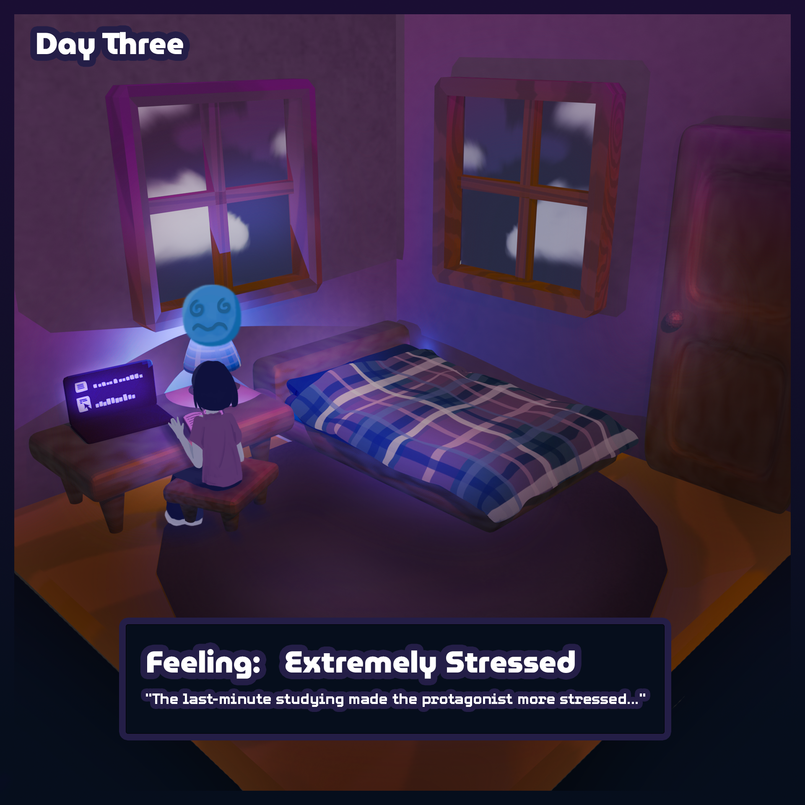

The last minute studying is not going well at all! The protagonist is feeling more and more unprepared for her exams, and she is
starting to regret her decision to study instead of playing the new game or hanging out with her family. However, the next day is
exam day, so the protagonist is starting to feel super nervous about her tests!
